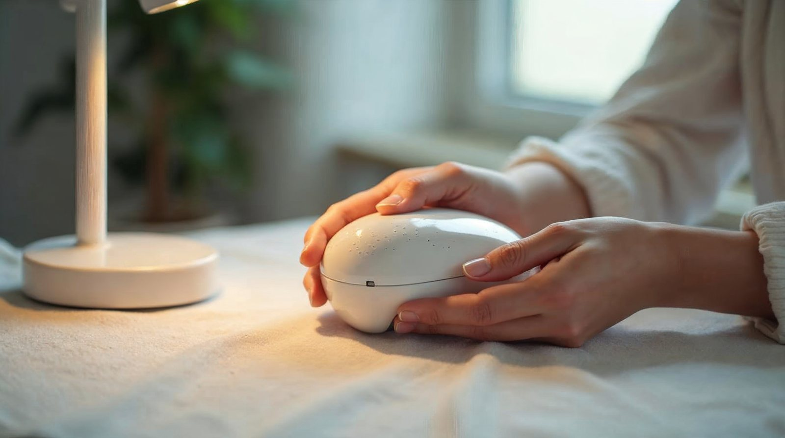
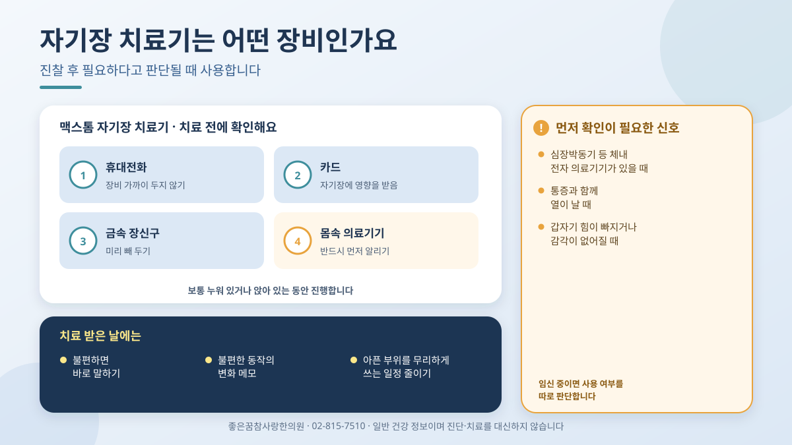

이종호 한의사 감수좋은꿈참사랑한의원 대표원장 (한의사 면허번호 19769)발행 2026-11-23 · 수정 2026-11-25
이 글의 차례
자기장 치료기는 자기장을 이용하는 물리요법 장비로, 좋은꿈참사랑한의원에서는 맥스톰 자기장 치료기를 쓰고 있습니다. 모든 분께 쓰는 장비가 아니라 진찰 후 필요하다고 판단될 때 침이나 추나와 이어서 쓰며, 심장박동기 같은 체내 전자 의료기기나 금속이 있으면 먼저 확인합니다.
장비 이름을 처음 들으면 몸에 무엇이 닿는지, 따끔하지는 않은지, 나에게도 맞는지 궁금해지기 마련입니다. 이 글에서는 장비를 쓰기 전에 무엇을 확인하는지, 치료받는 날 어떻게 준비하면 되는지, 어떤 경우에 장비보다 다른 확인이 먼저인지를 차례로 정리했습니다.
왜 미리 확인하나요
- 자기장은 몸속 전자 의료기기의 작동에 영향을 줄 수 있어, 심장박동기 등이 있으면 사용하지 않습니다.
- 몸속 금속 고정물이나 몸에 지닌 금속 장신구도 미리 확인합니다.
- 임신 중이거나 가능성이 있다면 사용 여부를 따로 판단합니다.
- 휴대전화나 카드처럼 자기장에 영향을 받을 수 있는 물건은 장비 가까이에 두지 않는 것이 좋습니다.
- 같은 통증이라도 부위와 상태에 따라 맞지 않는 경우가 있어 진찰 후 사용 여부를 정합니다.
- 인슐린 펌프, 보청기, 몸에 붙이는 혈당 측정기처럼 몸에 지니는 전자기기도 영향을 받을 수 있어 함께 여쭙습니다.

먼저 이렇게 여쭙니다
- 아픈 부위가 어디이고 언제부터 아팠나요?
- 몸에 심장박동기나 금속 고정물이 있나요?
- 임신 중이거나 가능성이 있나요?
- 치료 중 불편했던 경험이 있나요?
- 통증이 하루 중 언제 더 심한가요?
스스로 점검해 보세요
- 심장박동기나 인슐린 펌프처럼 몸속에 있거나 몸에 붙이는 의료기기가 있다
- 수술로 넣은 금속 판·나사·인공관절이 있다
- 임신 중이거나 그 가능성이 있다
- 보청기나 스마트워치를 늘 차고 있다
- 치료받을 부위에 최근 새로 생긴 저림이나 감각 변화가 있다
- 통증과 함께 열이 나거나 부위가 붓고 뜨겁다
앞의 네 가지 중 하나라도 해당하면 접수 때 먼저 말씀해 주세요. 뒤의 두 가지가 있다면 장비 치료보다 원인을 확인하는 진찰이 먼저입니다.
일상에서 먼저 해 볼 수 있는 것
- 치료 전 휴대전화, 카드, 금속 장신구 빼 두기
- 치료 중 불편하면 바로 말하기
- 치료 받은 날 불편한 동작의 변화 메모하기
- 드시는 약과 몸속 의료기기 정보 알려 주기
- 치료 받은 날은 아픈 부위를 무리하게 쓰는 일정 줄이기
치료받는 날에는 허리나 무릎 같은 부위를 드러내거나 편하게 눕기 쉬운 옷이 좋습니다. 벨트 버클이나 금속 장식이 많은 옷, 머리핀은 미리 빼 두면 준비가 빠릅니다. 몸속 기기를 쓰고 계신다면 기기 카드나 수술 기록을 사진으로 챙겨 오시면 확인이 한결 수월합니다.

예를 들면 이런 경우입니다
- 예를 들어 점심시간에 잠깐 들르는 직장인이 오래된 허리 뻐근함으로 오신 경우라면, 사원증 카드와 휴대전화, 스마트워치를 따로 둘 시간을 생각해 조금 여유 있게 오시면 서두르지 않고 치료받으실 수 있습니다.
- 예를 들어 심장 시술을 받은 적이 있지만 어떤 기기를 넣었는지 기억이 흐린 어르신이라면, 보호자가 함께 오시거나 다니시는 병원의 진료 기록을 챙겨 오세요. 확인될 때까지는 자기장 장비 대신 다른 방법을 먼저 살핍니다.
- 예를 들어 아이를 안다가 어깨가 뭉친 육아 중인 분이 둘째를 준비하고 있다면, 임신 가능성을 미리 말씀해 주세요. 아이와 함께 오신 날에는 아이가 장비 가까이 오지 않도록 자리를 함께 정합니다.

얼마나 지켜보고, 언제 바로 확인할까요
- 치료 뒤 가벼운 뻐근함이 하루 이틀 이어지는 정도라면, 느낌과 시간을 메모해 다음 진료 때 알려 주세요.
- 같은 느낌이 사흘 넘게 이어지거나 점점 심해진다면 다음 예약을 기다리지 말고 전화로 상의해 주세요.
- 몇 주 동안 치료를 이어 왔는데도 불편한 동작에 변화가 없다면, 방법을 다시 검토하고 필요하면 다른 검사를 권해 드립니다.
- 치료 중 어지럽거나 가슴이 두근거리면 참지 말고 바로 말씀해 주세요. 장비를 멈추고 상태를 봅니다.
한의원에서 함께 살필 수 있는 경우
- 허리, 어깨, 무릎처럼 오래된 통증이 있는 경우 진찰 후 필요하다고 판단될 때 사용합니다.
- 침, 추나 등과 이어서 쓰기도 합니다.
- 적용이 맞지 않는 경우 다른 방법을 함께 찾습니다.
좋은꿈참사랑한의원에서는 모든 분께 맥부터 짚고, 맥을 짚으면서 아픈 부위와 불편한 동작을 여쭙습니다. 움직임을 살피고 필요하다고 판단될 때 초음파 등으로 확인한 뒤, 침·약침·추나와 함께 맥스톰 자기장 치료기를 쓸지 정하고 오늘 어떤 치료를 왜 하는지 먼저 설명해 드립니다.
처음 오시면 접수 때 몸속 의료기기, 금속 고정물, 임신 가능성이 있는지 먼저 말씀해 주세요. 장비를 쓰기로 정하면 휴대전화와 카드를 따로 두고 편한 자세를 맞춘 뒤 시작하고, 끝나면 불편했던 동작을 다시 확인합니다.
치료 중에는 불편한 느낌이 없는지 살피고, 귀가 전에는 집에서 지켜볼 점을 알려 드립니다. 장비 사용 가능 여부나 비용이 궁금하다면 방문 전 전화로 확인해 주세요.
이렇게 기록해 오시면 상담이 쉬워집니다
- 아픈 부위와 가장 불편한 동작
- 몸속 의료기기·금속 고정물 정보
- 임신 여부와 드시는 약
- 치료 뒤 동작이 어떻게 달라졌는지
이런 증상은 먼저 확인이 필요합니다
- 통증과 함께 열이 나거나, 아픈 부위가 붉게 붓고 뜨거운 경우
- 팔다리 힘이 갑자기 빠지거나 감각이 없어진 경우, 대소변 보기가 어려워진 경우
이런 신호가 있으면 한의원보다 가까운 병원이나 응급실을 먼저 찾으세요.
함께 읽으면 좋은 글

여쭙는 것
- 아픈 부위가 어디이고 언제부터 아팠나요?
- 몸에 심장박동기나 금속 고정물이 있나요?
- 임신 중이거나 가능성이 있나요?
생활에서 해 볼 것
- 치료 전 휴대전화, 카드, 금속 장신구 빼 두기
- 치료 중 불편하면 바로 말하기
- 치료 받은 날 불편한 동작의 변화 메모하기
한의원에서 함께 살필 것
- 허리, 어깨, 무릎처럼 오래된 통증이 있는 경우 진찰 후 필요하다고 판단될 때 사용…
- 침, 추나 등과 이어서 쓰기도 합니다.
- 적용이 맞지 않는 경우 다른 방법을 함께 찾습니다.
먼저 확인이 필요한 신호
- 통증과 함께 열이 나거나, 아픈 부위가 붉게 붓고 뜨거운 경우
- 팔다리 힘이 갑자기 빠지거나 감각이 없어진 경우, 대소변 보기가 어려워진 경우
한눈에 보는 표
| 구분 | 핵심 |
|---|---|
| 여쭙는 것 | 아픈 부위가 어디이고 언제부터 아팠나요? 몸에 심장박동기나 금속 고정물이 있나요? |
| 생활에서 해 볼 것 | 치료 전 휴대전화, 카드, 금속 장신구 빼 두기 치료 중 불편하면 바로 말하기 |
| 한의원에서 함께 살필 것 | 허리, 어깨, 무릎처럼 오래된 통증이 있는 경우 진찰 후 필요하다고 판단될 때 사용합니다. 침, 추나 등과 이어서 쓰기도 합니다. |
| 먼저 확인이 필요한 신호 | 통증과 함께 열이 나거나, 아픈 부위가 붉게 붓고 뜨거운 경우 팔다리 힘이 갑자기 빠지거나 감각이 없어진 경우, 대소변 보기가 어려워진 경우 |
자주 묻는 질문
자기장 치료는 아픈가요?
대부분 누워 있거나 앉아 있는 동안 진행되며, 불편하면 바로 말씀해 주세요.
집에서 쓰는 자석 제품과 같은 건가요?
같다고 보기 어렵습니다. 진료실 장비는 진찰 후 필요할 때만 사용합니다.
몇 번 받아야 하나요?
부위와 상태에 따라 달라 진찰 후 안내하며, 반응을 보며 함께 조정합니다.
치료 중에 잠들어도 되나요?
편히 쉬셔도 괜찮습니다. 다만 불편한 느낌이 들면 참지 말고 바로 말씀해 주세요.
자기장 치료만 따로 받을 수 있나요?
진찰을 거쳐 필요하다고 판단될 때 쓰는 방법이라, 먼저 아픈 곳과 몸 상태를 살핀 뒤 함께 정합니다.
좋은꿈참사랑한의원은 재진 때 지난번 이야기부터 이어서 여쭙니다. 진료시간과 예약은 오시는 길에서 확인하세요.
어디서 상담받을 수 있나요?
좋은꿈참사랑한의원은 서울 동작구 만양로2길 2 신성빌딩 3층·5층(서울 동작구 상도동, 7호선 상도역 3번 출구 근처)에 있습니다. 한의사 3명(이종호 대표원장, 조영기 수석진료원장, 정원영 진료원장)이 진료합니다. 진료시간은 평일 09:30~20:00(점심 13:00~14:00), 토·일·공휴일 09:30~15:00이며, 방문 전 전화로 확인을 권합니다. 예약은 네이버 예약, 카카오톡 상담, 전화 02-815-7510로 받습니다.
이 글은 일반적인 건강 정보이며 개인의 진단이나 치료를 대신하지 않습니다. 증상이 있거나 복용 중인 약이 있다면 진료를 통해 확인하세요. 치료 효과는 개인마다 다를 수 있습니다.
작성 기준: 일반적으로 알려져 있는 건강 정보를 참고해 정리했습니다(대표원장 감수). 증상 기록은 1~2주 동안 하루 1회, 비슷한 시간에 적어 오시면 지난 상태와 비교하기 쉽습니다.